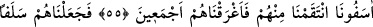

ANDOLSUN
BİZ MÛSÂ’YI
FİRAVUN’A GÖNDERMİŞTİK
46. Andolsun biz Mûsâ’yı âyetlerimizle Firavun’a ve onun ileri gelen adamlarına
göndermiştik de Mûsâ: Ben âlemlerin Rabbinin elçisiyim, demişti.
47. Onlara âyetlerimizi getirince, bunlara gülüvermişlerdi.
48. Onlara gösterdiğimiz her bir âyet (mûcize) diğerinden daha büyüktü. Doğru
yola dönsünler diye onları azâba uğrattık.
49. Bunun üzerine dediler ki: Ey büyücü! Sana verdiği ahde göre bizim için
Rabbine duâ et; çünkü biz artık doğru yola gireceğiz.
50. Fakat biz onlardan azâbı kaldırınca, sözlerinden dönüverdiler.
51. Firavun kavmine seslendi ve şöyle dedi: «Ey kavmim! Mısır mülkü ve
altımdan akıp giden şu ırmaklar benim değil mi? Hâla görmüyor musunuz?»
52. «Yoksa ben, kendisi zayıf ve neredeyse söz anlatamayacak durumda bulunan
şu adamdan daha hayırlı değil miyim?»
53. «Ona altın bilezikler verilmeli veya yanında ona yardımcı melekler gelmeli
değil miydi?»
54. Firavun kavmini aldattı; onlar da kendisine boyun eğdiler. Onlar yoldan çıkmış